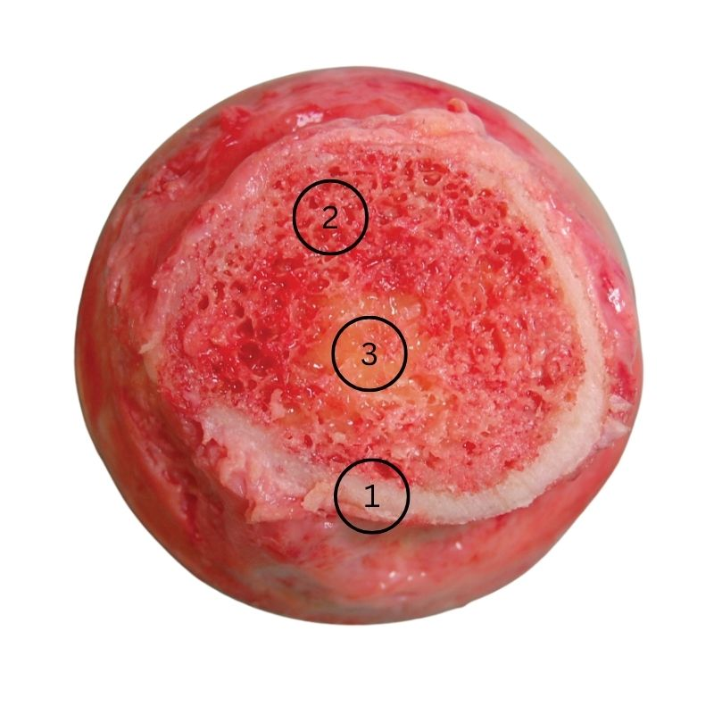

من أين يأتي الدم الجديد؟
حملة تبرّع بالدم في الدوحة. تخيّل نفسك بعد التبرّع مباشرة.
جسمك خسر نصف لتر من الدم. من أين يأتي البديل؟
ماذا يوجد داخل العظم؟
مقطع طولي في عظم طويل. انقر كل جزء منه لتعرف وصفه.
انقر كل جزء من العظم في المسرح أعلاه.
أحسنت — نقرتَ الأجزاء الثلاثة.
الآن طابق كل اسم مع موضعه في المسرح.
يتكوّن العظم من ثلاثة مكوّنات: العظم الكثيف والعظم الإسفنجي ونخاع العظم.
بعد أن فحصتَ داخل العظم بنفسك، أيّ العبارات يصف ما رأيته؟
أين يوجد العظم الإسفنجي؟
لماذا هذا الشكل بالذات؟
الجزء نفسه مكبَّرًا ومسمّى، لتربط كل شكل بوظيفته.
لماذا يناسب تركيبُ العظم الكثيف وظيفةَ دعم الجسم؟
ما الذي تفعله الثقوب الكثيرة في العظم الإسفنجي؟
يعمل العظم الإسفنجي بطريقة عمل الإسفنج الفعلي نفسها — مرن ويمكن ضغطه لاحتوائه على ثقوب.
أيٌّ من هذه العظام يحتوي على أعلى نسبة من العظم الإسفنجي؟
بكلماتك: ما أبرز ما يميّز تركيب العظم الإسفنجي؟
المصنع الذي بداخلك
عد إلى توقّعك في المحطة الأولى — هل كان صحيحًا؟
عد إلى توقّعك في البداية: من أين يأتي الدم الجديد بعد التبرّع؟
صنّف كل مكوّن في نوع النخاع الذي ينتجه.
نخاع العظم الأصفر يحتوي على الأنسجة الدهنية التي تُعدّ مصدرًا للطاقة.
ما الذي يميّز الخلية الجذعية عن غيرها؟
اشرح لماذا يتطلّب نخاع العظم الكثير من العناصر الغذائية.
هل العظام أنسجة حيّة؟
ما الذي يخزّنه العظم؟
غلينا عظمًا في هذا الماء ثم أخرجناه. الماء يبدو صافيًا.
هل خرج من العظم شيء إلى الماء؟
الراسب الأبيض دليل على وجود أيونات الكالسيوم في الماء — إذن العظم يخزّن الكالسيوم.
ما الذي يخزّنه العظم؟ طابق كل عنصر مع دوره.
لاحظ نصيب العظم الكثيف من حجم الهيكل العظمي وكتلته:
النصيب المصبوغ في كلّ شريط هو نصيب العظم الكثيف تحديدًا.
العظم الكثيف يشغل 20% فقط من حجم الهيكل العظمي، لكنه يشكّل 80% من كتلته. كيف يكون ذلك؟
في هشاشة العظام يصير العظم الكثيف أقلّ سماكة، والعظم الإسفنجي أقلّ كثافة. ما أثر ذلك على وظيفتَي العظمين؟
التقييم الختامي
عشرة أسئلة، ومحاولة واحدة لكلّ سؤال. وفي نهايتها شهادتك باسمك.
هذا هو التقييم الختامي لهذا الدرس. لكلّ سؤال محاولة واحدة، وبعد آخر سؤال تظهر نتيجتك وشهادتك. خذ وقتك.
1 ما وظيفة العظم الإسفنجي؟
2 أيّ العظام يحتوي على أعلى نسبة من العظم الإسفنجي؟
3 أين يوجد العظم الكثيف في العظم الطويل؟
4 ماذا ينتج نخاع العظم الأحمر؟
5 ما الذي يميّز الخلية الجذعية؟
6 ما دور نخاع العظم الأصفر؟
7 أيّ عنصر يخزّنه العظم ويساهم في صحّة الجهاز العصبي؟
8 تُظهر الصورة مقطعًا في عظم حقيقي. أيّ ترتيب يطابق الأرقام الثلاثة بأجزاء العظم؟

المصدر: OpenStax Anatomy and Physiology — عبر Wikimedia Commons · رخصة CC BY 4.0 (creativecommons.org/licenses/by/4.0) · عُدِّلت الصورة: اقتصاص وإضافة أرقام.
9 حدّد وظيفة العظم الكثيف.
10 سمِّ نوعَي نخاع العظم.